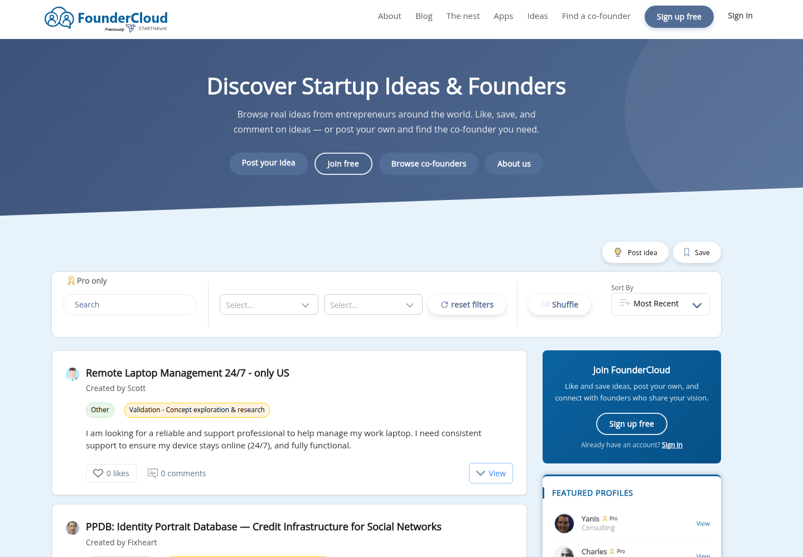
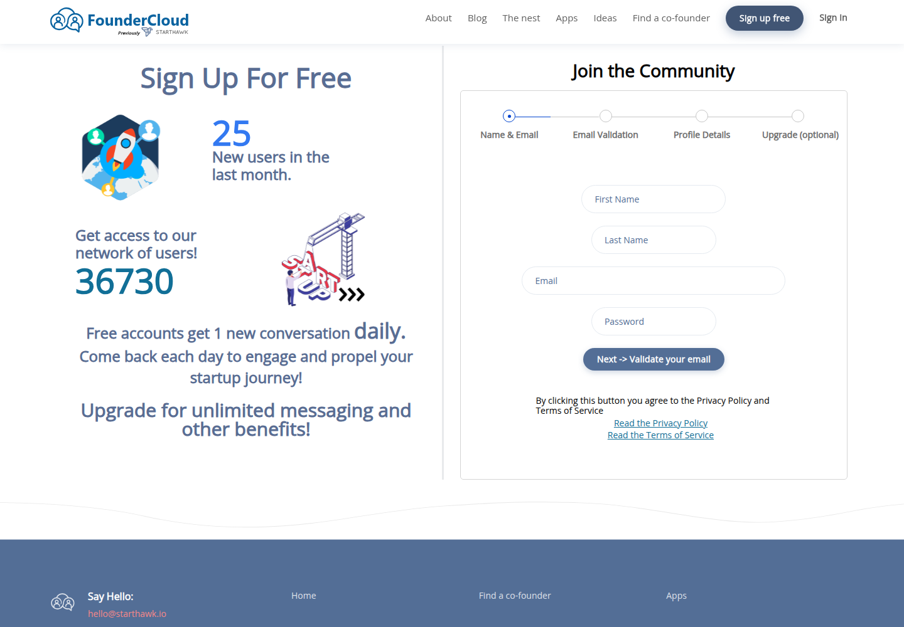
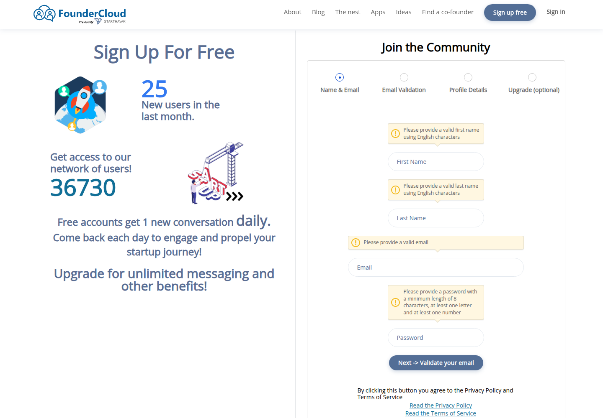

Profile
- Company
- FounderCloud
- Url
- https://www.foundercloud.com/
- Source Category
- Cofounder-matching platforms
- Research Status
- Deep Cited Research / Draft Complete
- Current Status
- live - active FounderCloud/StartHawk founder community with current founder feed, sign-up, blog posts through July 2026, and premium subscription references.
- Founded Launch Year
- 2019 per CB Insights profile for FounderCloud/StartHawk
- Company Age
- ~7 years (as of 2026)
- Hq Country
- United Kingdom - operated by Starthawk LTD (starthawk.io); registered office Accrington per site terms, CB Insights lists London. Earlier 'STARTHAWK LIMITED' (Companies House #12400556) was dissolved 2023-11-21 - a predecessor entity; current operator is Starthawk LTD
- Operating Area
- global - browse founders from 60+ countries; public profiles show worldwide founders
- Target Users
- startup founders, entrepreneurs with startup ideas, people seeking cofounders/business partners, early startup collaborators
- Product Category
- cofounder matching; startup idea/profile marketplace; founder community/networking
Product Flows
- Swipe Card Interface
- no
- Mutual Match
- no - browse/filter/direct message model, not reciprocal swipe matching
- Ai Matching Scoring
- not found
- Ai Deck Scoring
- no
- Founder To Founder Flow
- yes - create profile, browse/filter founders by skills/location/stage, message directly
- Founder To Investor Flow
- not found
- Project Profiles
- yes - idea posts, founder profiles, startup/project listings
- Messaging Collaboration
- yes - direct messaging; free accounts get 1 new conversation daily, premium unlocks unlimited messaging
- Mobile App
- not found
- Web App
- yes
Security & Documents
- Nda Gated Unlock
- no - FAQ discusses optional external NDA request but no platform NDA gate found
- Data Room
- no
- E Signature
- no
- Meeting Prep Ai Briefing
- no
Pricing, Funding & Traction
- Pricing Model
- Free to start; premium membership unlocks unlimited messaging, higher profile ranking, extra filters, read receipts, active-status visibility, partner discounts, and premium badge; exact current price not visible in public crawl.
- Business Model
- freemium founder-network/community subscription plus premium memberships and partner-app discounts.
- Total Funding
- not found
- Funding Rounds
- not found
- Investors
- not found
- Funding Source Type
- not found
- Last Funding Date
- not found
- Users Traction
- 36,000+ founders, 60+ countries; sign-up page showed 36,725 users and 28 new users in last month.
- Deals Funding Facilitated
- not found
- Partnerships
- Premium partner-app discounts listed, including Dashup, Capbase, and Pitch Deck discounts on apps page.
- Media Coverage
- CB Insights company profile used for founding/HQ context.
- Product Update Activity
- Active public blog with posts dated July 2, 2026, June 29, 2026, and other 2026 entries.
- Acquisition Rebrand History
- Operated by STARTHAWK LIMITED / StartHawk; FounderCloud appears to be the current branded site.
Scores
- Product Overlap Score
- 3
- Feature Maturity Score
- 2
- Market Traction Score
- 2
- Funding Strength Score
- 1
- Ai Depth Score
- 1
- Nda Security Strength Score
- 1
- Network Moat Score
- 2
- Direct Threat Score
- 2.2
- Source Confidence
- Medium
Evidence Notes
- Primary Sources
- https://www.foundercloud.com/
https://www.foundercloud.com/find-a-co-founder
https://www.foundercloud.com/sign-up
https://www.foundercloud.com/terms-of-service
https://www.foundercloud.com/blog
https://www.foundercloud.com/apps - Secondary Sources
- https://www.cbinsights.com/company/foundercloud
- Unsupported Claims
- Company funding, investors, exact premium price, mobile app, AI matching, investor flow, data room, and e-signature were not found in public sources.
- Contradictions
- Terms list STARTHAWK LIMITED in Accrington, UK while CB Insights lists FounderCloud headquarters as London, England.
- Last Checked
- 2026-07-19
- Notes
- FounderCloud is a lightweight cofounder/community marketplace. Its overlap is founder profiles, idea listings, filtering, messaging, and freemium community monetization rather than investor deal rooms or AI scoring. Liveness re-confirmed 2026-07-25 by direct fetch: site fully active (live user profiles, ideas dated July 2026, footer 'Copyright 2026 Starthawk LTD').
Registration Flow
Research date: 2026-07-19. Screenshots are sanitized public copies from the private registration-flow capture set; credentials, tokens, verification links/codes, browser chrome, and private identifiers are not intentionally published.
Outcome: stopped at required truthful-details / submission boundary.
Stop point: Blank Name & Email stage after documenting required-field validation, before entering personal data or selecting Next -> Validate your email with a completed form
Blocker / boundary: The direct signup form requires truthful first and last names in addition to the authorized email address and site-specific password, but the authorized registration credential file supplies no first or last name. Proceeding would require inventing or independently supplying identity data outside the card's authorized credentials.
- Official public homepage. FounderCloud's official homepage presents a public feed of startup ideas and founders, with Sign up free and Join free entry points. It describes joining to like and save ideas, post an idea, and connect with founders.
- Name & Email signup form. The official /sign-up page opens a four-stage Join the Community flow: Name & Email, Email Validation, Profile Details, and Upgrade (optional). The first stage requires First Name, Last Name, Email, and Password, and the submission control is labelled Next -> Validate your email. Continuing constitutes agreement to the Privacy Policy and Terms of Service.
- Required-field validation. Submitting the blank first stage displays inline validation requiring an English-character first name, an English-character last name, a valid email, and a password of at least 8 characters containing at least one letter and at least one number.


